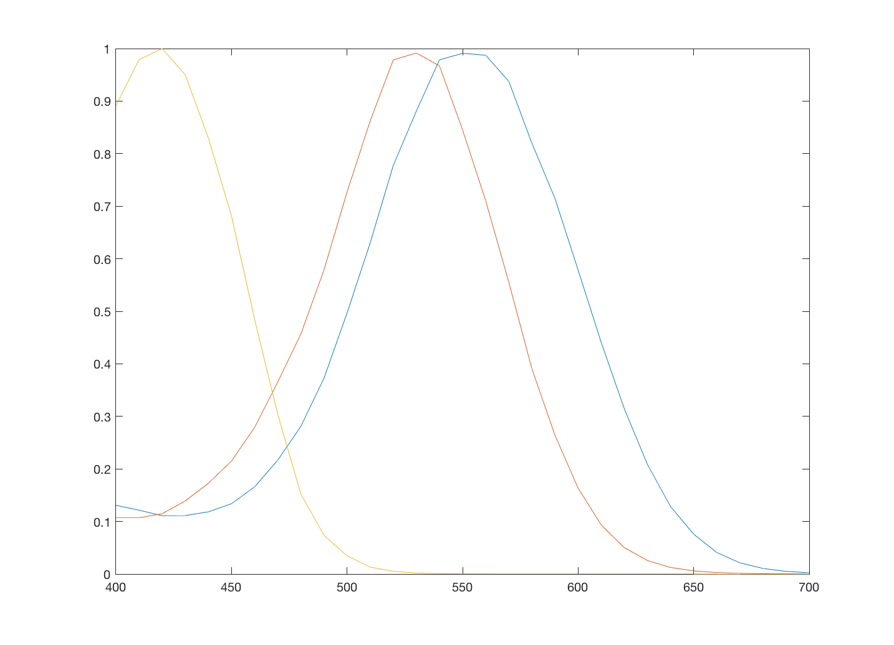

Contents
t_photoPigment
The photoPigment object represents the data needed to calculate the capture of light by the cone photopigment.
To create this object with its default values use
pp = photoPigment
pp =
photoPigment with properties:
opticalDensity: [3x1 double]
peakEfficiency: [3x1 double]
width: 2.000000000000000e-06
height: 2.000000000000000e-06
pdWidth: 2.000000000000000e-06
pdHeight: 2.000000000000000e-06
wave: [31x1 double]
absorbance: [31x3 double]
absorptance: [31x3 double]
quantaFundamentals: [31x3 double]
energyFundamentals: [31x3 double]
area: 4.000000000000000e-12
pdArea: 4.000000000000000e-12
gapWidth: 0
gapHeight: 0
Wavelength
The internal wavelength representation of the parameters is from 390:830 at 1nm. But the user selects their own representation of the wavelength manually. By default this is 400:10:700.
Absorbance
The cone absorbance function used by default is read from the file data/human/coneAbsorbance
It is stored in normalized form, by default, at a 400:10:700 wavelength resolution
vcNewGraphWin; plot(pp.wave,pp.absorbance)
Geometry
ecc = 0.0; ang = 0;
% Spacing (um), aperture (um), density (cones/mm2)
[s,a,d] = coneSize(ecc,ang)
s =
2.000000000000000e-06
a =
1.400000000000000e-06
d =
250000